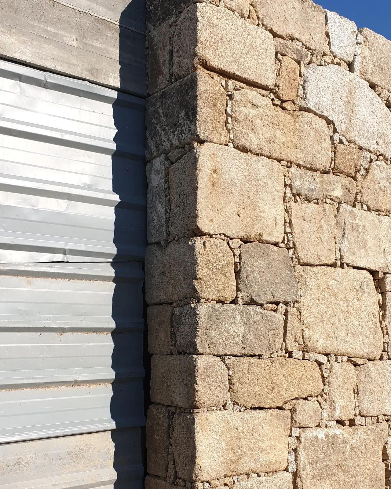

A tectónica da pedra. O rigor da engenharia.
Muros de contenção ciclópicos, cantaria de granito de corte preciso e conservação de património. Concebidos com o cálculo da Direção Técnica e esculpidos por um Mestre Canteiro.

A dupla mestria
A distância entre o desenho em gabinete e a execução em obra afeta muitos projetos de arquitetura. A SOLRAC une o cálculo técnico à mestria da cantaria para aproximar estas duas etapas.
A direção técnica
-
[01]
Cálculo de impulsos de terras: Dimensionamento por gravidade e contrafortes para contenção de encostas, prevenindo deslizamentos e microfissuras.
-
[02]
Drenagem subterrânea: Membranas geotêxteis multicamada e condutas de descompressão para alívio da pressão hidrostática.
-
[03]
Colaboração com gabinetes: Diálogo com gabinetes de arquitetura, leitura de desenhos CAD e verificação rigorosa de tolerâncias.
O mestre canteiro
-
[01]
Intuição mineral: Identificação dos planos naturais de clivagem e da orientação do grão do granito português para cortes limpos.
-
[02]
Trabalho artesanal: Trabalho à mão, bujardagem e acabamento flamejado para superfícies tácteis sem juntas de argamassa visíveis.
-
[03]
Geometrias tectónicas: Arcos de volta perfeita, escadas monolíticas em consola, cornijas históricas e cunhais de arestas precisas.
Obras de arquitetura selecionadas
Seleção fotográfica de muros de contenção, alvenaria rural e pormenores de cantaria do arquivo SOLRAC.
O protocolo tectónico em 4 fases
Cada obra SOLRAC segue um protocolo técnico rigoroso, desde a seleção dos blocos na pedreira até à certificação estrutural final.
Estudo geotécnico & seleção de blocos
Levantamento topográfico, cálculo de impulsos de terras e inspeção individual dos blocos de granito quanto à densidade mineral e ausência de microfissuras.
Aparelhamento & esquadria milimétrica
Aparelhamento geométrico e acabamento à medida (bujardado, flamejado ou picado à mão) de acordo com o projeto de arquitetura.
Travamento estrutural & drenagem oculta
Montagem de fiadas travadas, tubagem de alívio de águas subterrâneas e ancoragens em aço inoxidável de grau marítimo quando especificadas.
Direção técnica & certificação
Verificação do prumo por laser, ensaios de escoamento da drenagem e entrega da documentação de responsabilidade técnica para a durabilidade da obra.
Consulta para arquitetos & proprietários
A SOLRAC aceita um número limitado de obras por ano para assegurar a presença direta da direção técnica e do mestre canteiro em cada fase crítica.
Colaboramos com gabinetes de arquitetura, entidades de conservação do património e proprietários na Foz do Douro, Nevogilde, Gaia e nas quintas do Vale do Douro.
Foz do Douro · Nevogilde · Matosinhos Sul · Vila Nova de Gaia · Vale do Douro (Pinhão, Régua) · Minho & Galiza.